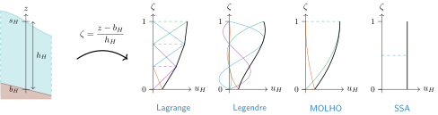
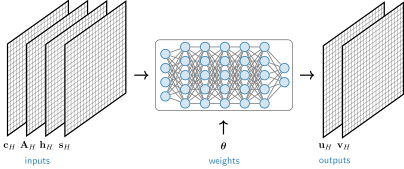

Module iceflow
Brief summary
The iceflow module allows to determine the horizontal velocities \((u,v)\) of the ice. To do so, it solves higher-order ice-flow equations by minimizing an associated energy. This can be done in a traditional way, by computing the velocities each the time the glacier configuration changes, or, instead, by training a neural network that maps that configuration to the velocities. The parameters of the module are described here.
Transition to unified mode
The unified framework (method=unified) is the recommended approach going forward. It consolidates the legacy solver (method=solved) and emulator (method=emulated) into a single architecture where the computational strategy is selected via the mapping parameter. Legacy modes are still supported for backward compatibility, but new projects should use the unified mode; it offers new features (e.g., additional optimizers and stopping criteria) and greater flexibility (e.g., support for custom mappings).
The iceflow module will be described in further details within the in-preparation paper for IGM 3 (Jouvet et al., 2026)1.
Quick start-up guide
The iceflow module can be configured in different ways. All modes solve the same physical problem; the difference is how the solution is computed.
Legacy modes
Solved mode
Classical solve for the velocity field. Example configuration file:
iceflow:
physics:
init_slidingco: 0.0464 # Basal friction coefficient (MPa y^{1/3} m^{-1/3})
init_arrhenius: 78.0 # Flow law coefficient (MPa^{-3} y^{-1})
method: solved # Classical solve
solver:
optimizer: adam # Optimization algorithm
step_size: 1.0 # Step size for optimizer
nbitmax: 100 # Maximum number of iterations
Emulated mode
Training of a neural network that emulates the velocity field. Example configuration file:
iceflow:
physics:
init_slidingco: 0.0464 # Basal friction coefficient (MPa y^{1/3} m^{-1/3})
init_arrhenius: 78.0 # Flow law coefficient (MPa^{-3} y^{-1})
method: emulated # Neural-network emulation
emulator:
pretrained: true # Use pre-trained network
lr: 2.0e-05 # Learning rate
retrain_freq: 10 # Retrain frequency (every 10 time steps)
nbit: 1 # Number of training iterations per time step
Unified mode
In the unified framework, the computational strategy is selected via the mapping parameter.
Identity mapping
Classical solve for the velocity field. Example configuration file:
iceflow:
physics:
init_slidingco: 0.0464 # Basal friction coefficient (MPa y^{1/3} m^{-1/3})
init_arrhenius: 78.0 # Flow law coefficient (MPa^{-3} y^{-1})
method: unified # Unified framework
unified:
mapping: identity # Classical solve
optimizer: lbfgs # L-BFGS optimizer
nbit: 100 # Number of optimization iterations
retrain_freq: 1 # Retrain frequency (solve at every iteration)
Network mapping
Training of a neural network that emulates the velocity field. Example configuration file:
iceflow:
physics:
init_slidingco: 0.0464 # Basal friction coefficient (MPa y^{1/3} m^{-1/3})
init_arrhenius: 78.0 # Flow law coefficient (MPa^{-3} y^{-1})
method: unified # Unified framework
unified:
mapping: network # Neural-network emulation
optimizer: adam # Adam optimizer
retrain_freq: 10 # Retrain frequency (every 10 time steps)
nbit: 1 # Number of training iterations per time step
adam:
lr: 2.0e-05 # Learning rate
network:
pretrained: true # Use pre-trained network
Additional options
The unified framework allows additional options, for instance boundary conditions and multi-stage optimization:
iceflow:
physics:
init_slidingco: 0.0464 # Basal friction coefficient (MPa y^{1/3} m^{-1/3})
init_arrhenius: 78.0 # Flow law coefficient (MPa^{-3} y^{-1})
method: unified # Unified framework
unified:
mapping: network # Neural-network emulation
bcs: [frozen_bed] # Boundary conditions
optimizer: sequential # Multi-stage optimization
sequential:
stages:
- optimizer: adam # Stage 1: Adam optimizer
nbit: 10000 # 10000 iterations
- optimizer: lbfgs # Stage 2: L-BFGS optimizer
nbit: 1000 # 1000 iterations
Physical model
Ice flow is governed by momentum balance and mass conservation. For glaciers and ice sheets with shallow geometry (horizontal extent ≫ thickness) and cryostatic vertical stresses, the three-dimensional Stokes equations reduce to the Blatter-Pattyn higher-order model (Herterich, 1987; Blatter, 1995; Pattyn, 2003)2 3 4, a system of coupled, nonlinear, elliptic PDEs for the horizontal velocity field \(\mathbf{u}=(u,v)\).
Minimization formulation
Rather than solving these PDEs directly, IGM adopts an energy minimization approach (Jouvet & Rappaz, 2011; Jouvet, 2016)5 6. The main advantage is that various optimizers can be applied to minimize this energy; in particular, both classical and neural-network approaches (Jouvet & Cordonnier, 2023)7.
The velocity field \(\mathbf{u}\) that satisfies the momentum balance is the one that minimizes the mechanical energy functional:
where \(\Omega\) is the three-dimensional ice domain, \(\Gamma_\mathrm{b}\) is the basal boundary, and \(s\) is the upper surface elevation. The three terms correspond to different physical processes:
- The first term represents viscous dissipation. Here, \(\mathbf{D}(\mathbf{u}) = (\nabla \mathbf{u} + \nabla \mathbf{u}^\top)/2\) is the strain-rate tensor, \(A\) is the Arrhenius factor, and \(n\) is the flow law exponent.
- The second term represents basal friction dissipation, here parametrized with a Weertman law. Here, \(c\) is the friction coefficient, \(\mathbf{u}_\mathrm{b}\) is the basal velocity, and \(m\) is the power-law exponent.
- The third term represents gravitational power, which is the driving force. Here, \(\rho\) is ice density and \(g\) is gravitational acceleration
The ice velocity is found by minimizing this functional:
where the functional depends on the evolving glacier state through the following variables:
- basal friction coefficient \(c\);
- Arrhenius factor \(A\);
- ice thickness \(h\);
- surface elevation \(s\).
Numerical set-up
To make the continuous energy minimization problem computationally tractable, we discretize the velocity field on a structured grid. This discretization transforms the infinite-dimensional optimization problem into a finite-dimensional one where the unknowns are velocity degrees of freedom, typically velocity values at discrete spatial locations.
Horizontal discretization
The horizontal domain is discretized on a uniform rectangular grid of size \(N_x \times N_y\) with constant cell spacing \(H =\Delta x = \Delta y\). Discrete variables such as friction coefficient \(c_H\), flow law coefficient \(A_H\), ice thickness \(h_H\), and surface elevation \(s_H\) are defined at grid cell corners. We use subscript \(H\) to denote these discrete quantities defined on the horizontal grid. These discrete fields are represented as 2D tensors: \(\mathbf{c}_H, \mathbf{A}_H, \mathbf{h}_H, \mathbf{s}_H \in \mathbb{R}^{N_y \times N_x}\). At a grid point \((x_i, y_j)\), the discrete values are denoted:
On this regular grid, the approximation space consists of piecewise linear functions (equivalently, P1 finite elements or linear shape functions). Spatial derivatives in the horizontal direction are approximated by finite differences on a staggered grid, which is equivalent to the gradient of piecewise linear interpolants. This structured discretization enables efficient GPU-accelerated computation and natural representation of fields as 2D/3D arrays.
Vertical discretization
In general, the vertical structure of ice flow might be complex, with velocity varying from zero at the bed to maximum at the surface, and with strong gradients near the base where sliding occurs. To capture this, we use a terrain-following coordinate:
where \(z\) is the physical elevation. This mapping ensures \(\zeta=0\) at the bed and \(\zeta=1\) at the surface, regardless of ice thickness or bed topography.
The velocity field is then represented as a Galerkin expansion onto vertical basis functions: at each horizontal grid point \((x_i, y_j)\), we write
in which \(N_z\) is the number of vertical degrees-of-freedom per column, \(\{\phi_k(\zeta)\}_{k=1}^{N_z}\) are the vertical basis functions and \((\mathbf{u}_H)_{k,j,i}\) denotes the \((k,j,i)\)-th component of the degrees-of-freedom tensor \(\mathbf{u}_H\), and similarly for \(\mathbf{v}_H\). These last tensors,
are the fundamental unknowns to be determined by the optimization procedure, as described in the next section.
Vertical basis functions
Four basis types are available via numerics.basis_vertical:
| Basis | \(N_z\) | Description |
|---|---|---|
ssa |
\(1\) | Shallow-shelf profile (depth-averaged velocity) |
molho |
\(2\) | Shallow-ice profile (Dias dos Santos et al., 2022)8 |
lagrange |
\(\geq 1\) | Lagrange shape functions |
legendre |
\(\geq 1\) | Legendre polynomials |

Vertical discretization schematic. The terrain-following coordinate ζ = (z − bH)/hH maps the ice column to [0,1]. Four vertical basis types are shown: Lagrange (piecewise polynomial interpolation), Legendre (polynomial expansion), MOLHO (Shallow Ice profile), and SSA (Shallow Shelf profile, depth-averaged).
Optimization set-up
With the velocity field discretized as DOF tensors \((\mathbf{u}_H, \mathbf{v}_H)\), the continuous energy minimization problem becomes a finite-dimensional optimization:
IGM supports two main computational strategies for solving this optimization problem, both minimizing the same physical energy functional \(\mathcal{J}\) but differing in what is optimized:
-
Direct velocity optimization (traditional solver): Optimize velocity degrees-of-freedom \((\mathbf{u}_H, \mathbf{v}_H)\) directly.
-
Neural network emulation (neural-network emulator): Optimize network weights that map the inputs \(\left(\mathbf{c}_H, \mathbf{A}_H, \mathbf{h}_H, \mathbf{s}_H\right)\) to the velocity degrees-of-freedom \((\mathbf{u}_H, \mathbf{v}_H)\).
The unified framework generalizes both strategies by introducing an abstract parameter vector \(\boldsymbol{\theta}\) and a mapping function \(\mathcal{M}\) that relates potential parameters to velocities:
Mappings
Identity mapping: unified.mapping: identity
The parameters \(\boldsymbol{\theta}\) are the velocity degress-of-freedom themselves; the mapping is simply the identity mapping \(\mathcal{I}\). At each time step, the energy functional \(\mathcal{J}\) is minimized by optimizing \((\mathbf{u}_H, \mathbf{v}_H)\) directly given the current glacier state \((\mathbf{c}_H, \mathbf{A}_H, \mathbf{h}_H, \mathbf{s}_H)\). This is the traditional solver approach.
Network mapping: unified.mapping: network
The parameters \(\boldsymbol{\theta}\) are the weights of a neural network \(\mathcal{N}\) that maps glacier state \((\mathbf{c}_H, \mathbf{A}_H, \mathbf{h}_H, \mathbf{s}_H)\) to velocity degrees-of-freedom. Typically, the network can be a convolutional neural network (LeCun et al., 2015)9. Pretrained network can be chosen by specifying unified.network.pretrained: true.

Network mapping architecture. The neural network parameterized by weights θ maps the glacier state (inputs: cH, AH, hH, sH) to velocity degrees of freedom (outputs: uH, vH).
Optimization algorithms
All optimizers operate on the abstract parameter \(\boldsymbol{\theta}\) via an iterative scheme:
where \(\mathbf{d}^{(k)}\) is the search direction and \(\alpha^{(k)}\) is the step size. Typically, \(\mathbf{d}^{(k)}\) is computed based on the gradient \(\nabla_{\boldsymbol{\theta}} \mathcal{J}(\boldsymbol{\theta}^{(k)})\), which is computed automatically using TensorFlow's automatic differentiation.
Available optimizers:
| Optimizer | Description | Reference |
|---|---|---|
adam |
Adaptive Moment Estimation: maintains running averages of gradient (first moment) and gradient magnitude (second moment) | (Kingma & Ba, 2015)10 |
lbfgs |
Limited-memory BFGS: quasi-Newton method approximating the inverse Hessian using gradient history | (Nocedal & Wright, 2006)11 |
sequential |
Multi-stage optimization allowing different optimizers and iteration counts in successive phases (see the quick start-up guide) | - |
Convergence criteria
Optimization terminates when a success or failure criterion is met. Multiple criteria can be specified. Example configuration file:
unified:
halt:
success:
- criterion: rel_tol
metric: grad_u_norm
tol: 1.0e-6
ord: l2
failure:
- criterion: nan
- criterion: inf
Success criteria: halt.success
| Criterion | Description |
|---|---|
rel_tol |
Relative change in metric below tolerance |
abs_tol |
Absolute metric value below tolerance |
patience |
No improvement for specified iterations |
Failure criteria: halt.failure
| Criterion | Description |
|---|---|
nan |
NaN values detected |
inf |
Inf values detected |
Metrics: metric
| Metric | Description |
|---|---|
cost |
Energy functional value |
grad_u_norm |
Velocity gradient norm |
grad_theta_norm |
Parameter gradient norm |
u |
Velocity degrees-of-freedom |
theta |
Optimization parameters |
Boundary conditions
Boundary conditions are configured via unified.bcs:
| Condition | Equation |
|---|---|
frozen_bed |
\(\mathbf{u}\vert_{z=b} = \mathbf{0}\) |
periodic_ns |
\(\mathbf{u}\vert_{y=L_y} = \mathbf{u}\vert_{y=0}\) |
periodic_we |
\(\mathbf{u}\vert_{x=L_x} = \mathbf{u}\vert_{x=0}\) |
Parameters
The complete default configuration file can be found here: iceflow.yaml.
Structure of the parameters:
iceflow
├── method
├── force_max_velbar
├── physics
│ └── ...
├── numerics
│ └── ...
├── solver
│ └── ...
├── emulator
│ └── ...
├── diagnostic
│ └── ...
└── unified
└── ...
Description of the parameters:
| Name | Description | Default value | Units |
|---|---|---|---|
method
|
Type of method to determine the ice flow: emulated, solved, diagnostic, unified. | emulated | — |
force_max_velbar
|
Upper-bound value for the velocities; applied if strictly positive. | 0.0 | m y\( ^{-1} \) |
physics
| Name | Description | Default value | Units |
|---|---|---|---|
physics.energy_components
|
List of energy components to compute; the available components are: gravity, viscosity, sliding. | ['viscosity', 'gravity', 'sliding'] | — |
physics.sliding.law
|
Type of sliding law. | weertman | — |
physics.sliding.use_mask_gr
|
If True, zero out basal shear stress in floating areas. | False | — |
physics.sliding.weertman.regu
|
Regularization parameter for velocity magnitude. | 1e-10 | m y\( ^{-1} \) |
physics.sliding.weertman.exponent
|
Weertman exponent. | 3.0 | — |
physics.sliding.weertman.u_ref
|
Reference velocity for the Weertman sliding law. | 1.0 | m y\( ^{-1} \) |
physics.sliding.coulomb.regu
|
Regularization parameter for velocity magnitude. | 1e-10 | m y\( ^{-1} \) |
physics.sliding.coulomb.exponent
|
Coulomb exponent. | 3.0 | — |
physics.sliding.coulomb.u_ref
|
Reference velocity for the Coulomb sliding law. | 1.0 | m y\( ^{-1} \) |
physics.sliding.coulomb.mu
|
Till coefficient. | 0.4 | — |
physics.sliding.budd.regu
|
Regularization parameter for velocity magnitude. | 1e-10 | m y\( ^{-1} \) |
physics.sliding.budd.exponent
|
Budd velocity exponent m (sliding stress ~ |u|^{1/m}). | 3.0 | — |
physics.sliding.budd.u_ref
|
Reference velocity for the Budd sliding law. | 1.0 | m y\( ^{-1} \) |
physics.sliding.budd.N_ref
|
Reference effective pressure for the Budd sliding law (MPa, matching `state.effective_pressure`). | 1.0 | MPa |
physics.sliding.budd.q_exponent
|
Effective-pressure exponent q in the generalised power law (sliding stress ~ N^q). 1.0 recovers the linear Budd law; 0.5 gives the Tsai-style sublinear N-dependence. | 1.0 | — |
physics.gravity_cst
|
Gravitational constant. | 9.81 | m s\( ^{-2} \) |
physics.ice_density
|
Density of ice. | 910.0 | kg m\( ^{-3} \) |
physics.water_density
|
Density of water. | 1000.0 | kg m\( ^{-3} \) |
physics.init_slidingco
|
Initial value for the sliding coefficient. | 0.0464 | MPa y\( ^{m} \) m\( ^{-m} \) |
physics.init_arrhenius
|
Initial value for the Arrhenius factor in Glen's flow law. | 78.0 | MPa\( ^{-n} \) y\( ^{-1} \) |
physics.enhancement_factor
|
Enhancement factor in Glen's flow law: prefactor multiplying the arrhenius factor. | 1.0 | — |
physics.exp_glen
|
Glen's flow law exponent. | 3.0 | — |
physics.regu_glen
|
Regularization parameter for Glen's flow law. | 1e-05 | — |
physics.thr_ice_thk
|
Minimal value for the ice thickness in the strain-rate computation. | 0.1 | m |
physics.min_sr
|
Minimal value for the strain rate. | 1e-20 | y\( ^{-1} \) |
physics.max_sr
|
Maximum value for the strain rate. | 1e+20 | y\( ^{-1} \) |
physics.force_negative_gravitational_energy
|
Force the gravitational energy term to be negative. | False | — |
physics.cf_eswn
|
This forces calving front at the border of the domain in the side given in the list. | [] | — |
numerics
| Name | Description | Default value | Units |
|---|---|---|---|
numerics.precision
|
Precision type for the fields: single, double. | single | — |
numerics.ord_grad_u
|
Default type of norm used for the halt critera associated with the velocity. | l2_weighted | — |
numerics.ord_grad_theta
|
Default type of norm used for the halt critera associated with the parameters. | l2_weighted | — |
numerics.Nz
|
Number of grid points for the vertical discretization. | 10 | — |
numerics.vert_spacing
|
Parameter controlling the discretization density to get more points near the bed than near the surface; a value 1.0 means uniform vertical spacing. | 4.0 | — |
numerics.basis_horizontal
|
Basis for the horizontal discretization. | central | — |
numerics.basis_vertical
|
Basis for the vertical discretization. | Lagrange | — |
solver
| Name | Description | Default value | Units |
|---|---|---|---|
solver.step_size
|
Step size for the optimizer. | 1.0 | — |
solver.nbitmax
|
Maximum number of iterations for the optimizer. | 100 | — |
solver.optimizer
|
Type of optimizer. | adam | — |
solver.print_cost
|
Display the cost during the optimization. | False | — |
solver.fieldin
|
Input fields of the ice-flow solver. | ['thk', 'usurf', 'arrhenius', 'slidingco', 'dX'] | — |
emulator
| Name | Description | Default value | Units |
|---|---|---|---|
emulator.fieldin
|
Input fields of the ice-flow emulator. | ['thk', 'usurf', 'arrhenius', 'slidingco', 'dX'] | — |
emulator.retrain_freq
|
Frequency at which the emulator is retrained. | 10 | — |
emulator.print_cost
|
Display the cost during the optimization. | False | — |
emulator.lr
|
Learning rate for the training of the emulator. | 2e-05 | — |
emulator.lr_init
|
Initial learning rate for the training of the emulator. | 0.0001 | — |
emulator.lr_decay
|
Decay learning-rate parameter for the training of the emulator. | 0.95 | — |
emulator.warm_up_it
|
Number of iterations for a warm-up period, allowing intense initial training. | -10000000000.0 | — |
emulator.nbit_init
|
Number of iterations done initially for the training of the emulator. | 1 | — |
emulator.nbit
|
Number of iterations done at each time step for the training of the emulator. | 1 | — |
emulator.framesizemax
|
Size of the patch used for training the emulator; this is useful for large size arrays as otherwise the GPU memory could be overloaded. | 1000 | — |
emulator.split_patch_method
|
Method to split the patch for the emulator: sequential (usefull for large size arrays) or parallel. | sequential | — |
emulator.pretrained
|
Use a pretrained emulator instead of starting from scratch. | True | — |
emulator.name
|
Directory path of the pretrained ice-flow emulator; taken from the library if this is empty. | — | |
emulator.save_model
|
Save the ice-flow emulator at the end of the simulation. | False | — |
emulator.exclude_borders
|
Quick fix of the border issue; otherwise the emulator shows zero velocity at the border. | 0 | — |
emulator.optimizer
|
Type of optimizer for the emulator. | Adam | — |
emulator.optimizer_clipnorm
|
Maximum value for the gradient of each weight. | 1.0 | — |
emulator.optimizer_epsilon
|
Small constant for numerical stability of the Adam optimizer. | 1e-07 | — |
emulator.save_cost
|
Name of the file containing the cost. | — | |
emulator.output_directory
|
Directory of the file containing the cost. | — | |
emulator.plot_sol
|
Plot the solution of the emulator at each time step. | False | — |
emulator.pertubate
|
Perturb the input fiels during the training. | False | — |
emulator.network.architecture
|
Type of network: cnn, unet. | cnn | — |
emulator.network.multiple_window_size
|
For a U-Net, this requires the window size to be a multiple of 2 to the power N. | 0 | — |
emulator.network.activation
|
Type of activation function: lrelu, relu, tanh, sigmoid, ... | LeakyReLU | — |
emulator.network.nb_layers
|
Number of layers in the network. | 16 | — |
emulator.network.nb_blocks
|
Number of block layers in the U-Net. | 4 | — |
emulator.network.nb_out_filter
|
Number of output filters in the network. | 32 | — |
emulator.network.conv_ker_size
|
Size of the convolution kernel. | 3 | — |
emulator.network.dropout_rate
|
Dropout rate in the CNN. | 0.0 | — |
emulator.network.weight_initialization
|
Initialization type for the network weights: glorot_uniform, he_normal, lecun_normal. | glorot_uniform | — |
emulator.network.cnn3d_for_vertical
|
Apply a 3D CNN instead of a 2D one for each horizontal layer. | False | — |
emulator.network.batch_norm
|
Apply a batch normalization layer. | False | — |
emulator.network.l2_reg
|
Amount of l2 regularization penalty. | 0.0 | — |
emulator.network.separable
|
Apply convolution layers that are separable. | False | — |
emulator.network.residual
|
Apply residual layer. | True | — |
diagnostic
| Name | Description | Default value | Units |
|---|---|---|---|
diagnostic.save_freq
|
Frequency of the saving of the metrics. | 1 | — |
diagnostic.filename_metrics
|
Name of the file with the metrics. | diagnostic_metrics.txt | — |
unified
| Name | Description | Default value | Units |
|---|---|---|---|
unified.mapping
|
Type of mapping between the weights and the velocity. | network | — |
unified.bcs
|
List of the applied boundary conditions; the available bcs are: frozen_bed, periodic_ns, periodic_we, no_slip, periodic_ns_global, periodic_we_global, no_slip_global. | [] | — |
unified.bc.dirichlet.left
|
Value enforced on the DOFs of the velocity at the left (west) border; note that this sets the degrees of freedom, not the velocity field itself. | 0.0 | m y\( ^{-1} \) |
unified.bc.dirichlet.right
|
Value enforced on the DOFs of the velocity at the right (east) border; note that this sets the degrees of freedom, not the velocity field itself. | 0.0 | m y\( ^{-1} \) |
unified.bc.dirichlet.top
|
Value enforced on the DOFs of the velocity at the top (north) border; note that this sets the degrees of freedom, not the velocity field itself. | 0.0 | m y\( ^{-1} \) |
unified.bc.dirichlet.bottom
|
Value enforced on the DOFs of the velocity at the bottom (south) border; note that this sets the degrees of freedom, not the velocity field itself. | 0.0 | m y\( ^{-1} \) |
unified.optimizer
|
Type of optimizer used to solve the ice flow. | adam | — |
unified.nbit
|
Number of iterations done to solve the ice flow. | 1 | — |
unified.nbit_init
|
Number of iterations done initially to solve the ice flow. | 1 | — |
unified.nbit_warmup
|
Number of iterations done for a warm-up period to solve the ice flow, allowing intense initial training. | -1 | — |
unified.retrain_freq
|
Frequency at which the ice flow is solved. | 10 | — |
unified.retrain_threshold
|
Threshold (expressed as a z-score) above which the ice flow is re-solved. | 10000000000.0 | — |
unified.newton.damping
|
1e-6 | ||
unified.adam.lr
|
Learning rate for the Adam optimizer. | 2e-05 | — |
unified.adam.lr_init
|
Initial learning rate for the Adam optimizer. | 0.0001 | — |
unified.adam.lr_decay
|
Decay learning-rate parameter for the Adam optimizer. | 1.0 | — |
unified.adam.lr_decay_steps
|
Number of steps during which the decay learning rate is applied for the Adam optimizer. | 1000 | — |
unified.adam.optimizer_clipnorm
|
Maximum value for the gradient of each weight. | 1.0 | — |
unified.lbfgs.memory
|
Number of saved iteration results for the L-BFGS optimizer. | 10 | — |
unified.lbfgs.alpha_min
|
Minimal value for the step size in the line search. | 0.0 | — |
unified.cg_newton.cg_tol
|
Tolerance for the conjugate-gradient linear solver in the CG-Newton optimizer. | 1e-10 | — |
unified.cg_newton.cg_max_iter
|
Maximum number of conjugate-gradient iterations in the CG-Newton optimizer. | 100 | — |
unified.cg_newton.truncated
|
Use truncated (inexact) Newton steps in the CG-Newton optimizer. | True | — |
unified.cg_newton.damping
|
Damping added to the Hessian diagonal for regularization in the CG-Newton optimizer. | 1e-6 | — |
unified.trust_region.cg_max_iter
|
Maximum number of conjugate-gradient iterations for the trust-region sub-problem. | 100 | — |
unified.trust_region.cg_tol
|
Tolerance for the conjugate-gradient linear solver in the trust-region optimizer. | 1e-12 | — |
unified.trust_region.delta_init
|
Initial trust-region radius. | 1e2 | — |
unified.trust_region.delta_max
|
Maximum trust-region radius. | 1e10 | — |
unified.trust_region.eta
|
Minimum ratio of actual to predicted reduction for accepting a step in the trust-region optimizer. | 0.15 | — |
unified.trust_region.damping
|
Damping added to the Hessian diagonal for regularization in the trust-region optimizer. | 1e-6 | — |
unified.muon.lr
|
Learning rate for matrix parameters (conv kernels, Dense kernels) in the Muon optimizer. | 0.02 | — |
unified.muon.momentum
|
Nesterov momentum coefficient for the Muon optimizer. | 0.95 | — |
unified.muon.ns_steps
|
Number of Newton-Schulz iterations used to orthogonalize the gradient update in the Muon optimizer. | 5 | — |
unified.muon.lr_1d
|
Learning rate for rank-1 parameters (biases) in the Muon optimizer; these receive plain Nesterov SGD. | 0.0003 | — |
unified.soap.lr
|
Adam learning rate for the SOAP optimizer. | 0.0003 | — |
unified.soap.beta1
|
Adam first-moment decay coefficient for the SOAP optimizer. | 0.95 | — |
unified.soap.beta2
|
Adam second-moment decay coefficient for the SOAP optimizer; also used to update the Kronecker preconditioner factors. | 0.999 | — |
unified.soap.eps
|
Epsilon for numerical stability in the Adam update of the SOAP optimizer. | 1e-08 | — |
unified.soap.precond_freq
|
Number of iterations between eigendecompositions of the Kronecker preconditioner factors in the SOAP optimizer. | 10 | — |
unified.soap.damping
|
Regularization added to the Kronecker preconditioner factors before eigendecomposition in the SOAP optimizer. | 1e-08 | — |
unified.sequential.stages
|
List containing the optimizer configurations when using a sequential optimization approach. | [] | — |
unified.line_search
|
Type of line-search method. | hager-zhang | — |
unified.inputs
|
Input fields of the mapping for the ice flow. | ['thk', 'usurf', 'arrhenius', 'slidingco', 'dX'] | — |
unified.normalization.method
|
Type of method used for the normalization of the inputs: adaptive, fixed. | adaptive | — |
unified.normalization.fixed.inputs_offsets.thk
|
Fixed offset for the input thk. | 0.0 | m |
unified.normalization.fixed.inputs_offsets.usurf
|
Fixed offset for the input usurf. | 0.0 | m |
unified.normalization.fixed.inputs_offsets.arrhenius
|
Fixed offset for the input arrhenius. | 0.0 | MPa\( ^{-n} \) y\( ^{-1} \) |
unified.normalization.fixed.inputs_offsets.slidingco
|
Fixed offset for the input slidingco. | 0.0 | MPa y\( ^{m} \) m\( ^{-m} \) |
unified.normalization.fixed.inputs_offsets.dX
|
Fixed offset for the input dX. | 0.0 | m |
unified.normalization.fixed.inputs_offsets.X
|
Fixed offset for the input X. | 0.0 | m |
unified.normalization.fixed.inputs_offsets.Y
|
Fixed offset for the input Y. | 0.0 | m |
unified.normalization.fixed.inputs_variances.thk
|
Fixed variance for the input thk. | 1.0 | m |
unified.normalization.fixed.inputs_variances.usurf
|
Fixed variance for the input usurf. | 1.0 | m |
unified.normalization.fixed.inputs_variances.arrhenius
|
Fixed variance for the input arrhenius. | 1.0 | MPa\( ^{-n} \) y\( ^{-1} \) |
unified.normalization.fixed.inputs_variances.slidingco
|
Fixed variance for the input slidingco. | 1.0 | MPa y\( ^{m} \) m\( ^{-m} \) |
unified.normalization.fixed.inputs_variances.dX
|
Fixed variance for the input dX. | 1.0 | m |
unified.normalization.fixed.inputs_variances.X
|
Fixed variance for the input X. | 1.0 | m |
unified.normalization.fixed.inputs_variances.Y
|
Fixed variance for the input Y. | 1.0 | m |
unified.network.debug_mode
|
Enable debug mode for the optimizer. | False | — |
unified.network.debug_freq
|
Frequency of debug output. | 100 | — |
unified.network.pretrained
|
Use a pretrained network instead of starting from scratch. | True | — |
unified.network.pretrained_path
|
Path to the pretrained network; taken from the library if empty. | — | |
unified.network.print_summary
|
Print a summary of the network. | False | — |
unified.network.output_scale
|
Scale of the outputs of the network. | 1.0 | — |
unified.network.architecture
|
Type of network. | CNN | — |
unified.data_preparation.framesizemax
|
Maximum patch size; the domain is split into non-overlapping patches no larger than this value to avoid GPU memory overload. | 1000 | — |
unified.data_preparation.patches_per_batch
|
Number of patches processed per mini-batch during optimization. | 1 | — |
unified.halt.freq
|
Frequency of evaluation of the halt criteria. | 1 | — |
unified.halt.success
|
List of success criteria. | [] | — |
unified.halt.failure
|
List of failure criteria. | [] | — |
unified.halt.criteria.rel_tol.tol
|
Default tolerance for the relative-change criterion. | 1e-3 | — |
unified.halt.criteria.rel_tol.ord
|
Default type of norm for the relative-change criterion. | l2 | — |
unified.halt.criteria.abs_tol.tol
|
Default tolerance for the absolute-change criterion. | 1e-3 | — |
unified.halt.criteria.abs_tol.ord
|
Default type of norm for the absolute-change criterion. | l2_weighted | — |
unified.halt.criteria.patience.patience
|
Default number of iteration without improvement before halting. | 100 | — |
unified.halt.criteria.inf
|
Default parameters for the inf criterion. | {} | — |
unified.halt.criteria.nan
|
Default parameters for the nan criterion. | {} | — |
unified.halt.metrics.theta
|
Default parameters for the parameter metric. | {} | — |
unified.halt.metrics.u
|
Default parameters for the velocity metric. | {} | — |
unified.halt.metrics.cost
|
Default parameters for the cost metric. | {} | — |
unified.halt.metrics.grad_u_norm
|
Default parameters for the velocity-gradient-of-the-cost metric. | {} | — |
unified.halt.metrics.grad_theta_norm
|
Default parameters for the parameter-gradient-of-the-cost metric. | {} | — |
unified.display.print_cost
|
Print the cost during the ice-flow optimization. | False | — |
unified.display.print_cost_freq
|
Frequency of printing the cost during the ice-flow optimization. | 1 | — |
Contributors: G. Jouvet, T. Gregov, B. Finley, S. Rosier.
-
Jouvet, G., Cook, S., Cordonnier, G., Finley, B., Henz, A., Herrmann, O., Maussion, F., Mey, J., Scherler, D., & Welty, E. (2026). Concepts and capabilities of the instructed glacier model. https://doi.org/10.31223/x5t99c ↩
-
Herterich, K. (1987). On the flow within the transition zone between ice sheet and ice shelf. In Dynamics of the west antarctic ice sheet (pp. 185--202). Springer Netherlands. https://doi.org/10.1007/978-94-009-3745-1\_11 ↩
-
Blatter, H. (1995). Velocity and stress fields in grounded glaciers: A simple algorithm for including deviatoric stress gradients. Journal of Glaciology, 41(138), 333--344. https://doi.org/10.3189/s002214300001621x ↩
-
Pattyn, F. (2003). A new three‐dimensional higher‐order thermomechanical ice sheet model: Basic sensitivity, ice stream development, and ice flow across subglacial lakes. Journal of Geophysical Research: Solid Earth, 108(B8). https://doi.org/10.1029/2002jb002329 ↩
-
Jouvet, G., & Rappaz, J. (2011). Analysis and finite element approximation of a nonlinear stationary stokes problem arising in glaciology. Advances in Numerical Analysis, 2011, 1--24. https://doi.org/10.1155/2011/164581 ↩
-
Jouvet, G. (2016). Mechanical error estimators for shallow ice flow models. Journal of Fluid Mechanics, 807, 40--61. https://doi.org/10.1017/jfm.2016.593 ↩
-
Jouvet, G., & Cordonnier, G. (2023). Ice-flow model emulator based on physics-informed deep learning. Journal of Glaciology, 1--15. https://doi.org/10.1017/jog.2023.73 ↩
-
Dias dos Santos, T., Morlighem, M., & Brinkerhoff, D. (2022). A new vertically integrated MOno-Layer Higher-Order (MOLHO) ice flow model. The Cryosphere, 16(1), 179--195. https://doi.org/10.5194/tc-16-179-2022 ↩
-
LeCun, Y., Bengio, Y., & Hinton, G. (2015). Deep learning. Nature, 521, 436--444. https://doi.org/10.1038/nature14539 ↩
-
Kingma, D. P., & Ba, J. (2015). Adam: A method for stochastic optimization. 3rd International Conference on Learning Representations, ICLR 2015. http://arxiv.org/abs/1412.6980 ↩
-
Nocedal, J., & Wright, S. J. (2006). Numerical optimization (2nd ed.). Springer New York. https://doi.org/10.1007/978-0-387-40065-5 ↩